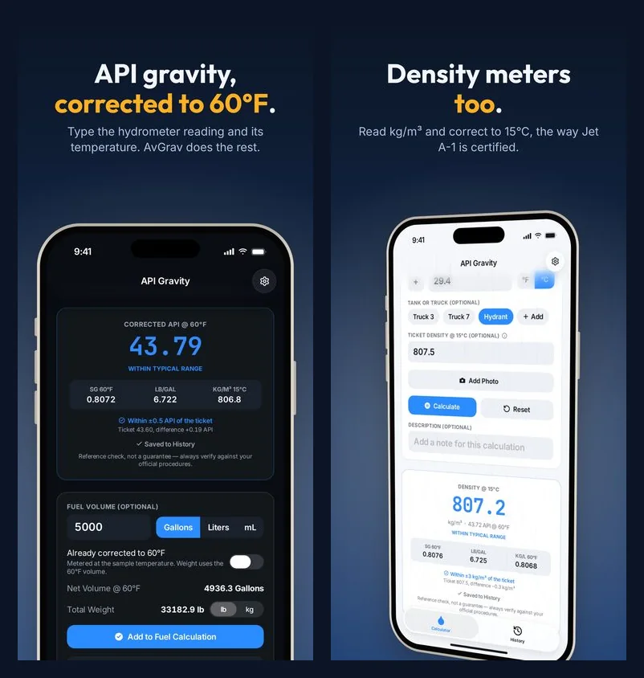

How Much Does Jet A Weigh per Gallon? (And 100LL)
The short answer: Jet A weighs about 6.7 pounds per U.S. gallon, and 100LL about 6.0. Those are fine for a rough guess. For a weight a crew will put on their load sheet, the right number depends on two things: how dense this particular batch is, and how warm the fuel is when you meter it.
The Range the Spec Allows
ASTM D1655, the Jet A specification, allows a density from 775 to 840 kg/m³ at 15°C. That's an API gravity of about 51 down to 37, and 6.46 to 7.00 pounds per gallon at 60°F. Most deliveries land in the middle, around 6.7, but a light batch and a heavy one can differ by half a pound a gallon. Over a 600-gallon uplift, that's more than 300 pounds.
100LL has no density limit in its specification, ASTM D910. Refiners' data sheets list it at about 710 to 720 kg/m³, roughly 5.9 to 6.0 pounds per gallon.
Getting the Real Number From Gravity
A corrected API gravity reading gives you the weight per gallon at 60°F:
- Specific gravity = 141.5 ÷ (API + 131.5)
- Pounds per gallon = specific gravity × 8.328, the weight of a gallon of water at 60°F
Jet A at 43.79 API, for example, has a specific gravity of 0.8072 and weighs 6.722 pounds per gallon at 60°F. There's a full conversion table here.
Why the Meter Temperature Matters
Pounds per gallon at 60°F only applies to gallons at 60°F. Jet A expands about 0.05% for every degree Fahrenheit, so a meter on a hot ramp counts more gallons for the same weight of fuel. Unless your meter corrects for temperature, convert first.
Take that same 43.79 Jet A at 85°F. 5,000 gallons on the meter is 4,936.3 gallons at 60°F, which weighs 33,182.9 pounds. Multiplying the metered 5,000 gallons by 6.722 instead would say 33,611, about 428 pounds too heavy.
Turning a Pound Request Into Gallons
Crews often ask for fuel in pounds. To turn that into gallons:
- Divide the pounds by the pounds per gallon from a corrected reading of the fuel you're dispensing. 4,000 pounds of 43.79 Jet A is 595.0 gallons at 60°F.
- If your meter isn't temperature-compensated, divide that by the volume correction factor for the fuel's temperature. At 85°F it's 602.7 gallons on the meter; at 40°F, 589.1.
Pump 595.0 gallons on a meter at 85°F and the crew gets about 3,949 pounds, 51 short. Between a 40-degree morning and an 85-degree afternoon, the same 4,000 pounds is 13.6 gallons apart on the meter. Small for a ramp estimate, not small for weight and balance.
Letting AvGrav Do It
AvGrav shows the pounds per gallon with every corrected reading. Add the volume, say whether it was metered at the sample temperature or is already corrected to 60°F, and it gives the net gallons at 60°F and the weight in pounds or kilograms, using the 60°F volume.

It works from gallons to pounds. For a pound request, divide by the pounds per gallon it shows, then use the steps above.
AvGrav and this guide are reference and convenience tools, not certified measurement instruments or a substitute for a calibrated hydrometer, thermometer, or your organization's official procedures. Always follow your organization's quality control program and applicable regulations before accepting, rejecting, or releasing any fuel.